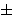
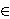

[Prethodna tema]
[Sljedeæa tema]
3.2. Raèunanje ranga
Raèunanje ranga eliptièke krivulje nad
 je vrlo težak problem i zapravo ne postoji algoritam
za raèunanje ranga proizvoljne eliptièke krivulje.
No, postoje metode pomoæu kojih se u praksi èesto može
izraèunati rang.
je vrlo težak problem i zapravo ne postoji algoritam
za raèunanje ranga proizvoljne eliptièke krivulje.
No, postoje metode pomoæu kojih se u praksi èesto može
izraèunati rang.
Pretpostavimo da E ima toèku reda 2. U tom sluèaju je
raèunanje ranga u pravilu lakše nego u opæem sluèaju.
Opisat æemo metodu za raèunanje ranga koja se naziva
spust pomoæu 2-izogenije.
Ako krivulja E dana jednadžbom
y2 = f(x) ima toèku reda 2, onda
polinom f(x) ima racionalnu nultoèku. Možemo
pretpostaviti da je ta racionalna nultoèka upravo jednaka 0.
To znaèi da E ima jednadžbu oblika
y2 = x3 + ax2
+ bx.
Za krivulju E ' koja ima jednadžbu
y2 = x3 - 2ax2
+ (a2 - 4b)x
kažemo da je 2-izogena krivulji E.
Opæenito, izogenijom zovemo homomorfizam izmeðu dvije
eliptièke krivulje koji je dan pomoæu racionalnih funkcija. U našem
sluèaju, radi se o preslikavanju
:
E( )
" ALIGN=MIDDLE>
E '(),
(x,y) =
(y2 / x2,
y(x2 - b) / x2).
)
" ALIGN=MIDDLE>
E '(),
(x,y) =
(y2 / x2,
y(x2 - b) / x2).
Zapišimo x i y u obliku x = m /
e2, y = n / e3,
te ih uvrstimo u jednadžbu od E. Dobivamo:
n2 = m(m2 +
ame2 + be4).
Stavimo b1 =

(m,b), gdje je
(m,b) najveæi zajednièki djelitelj od m i
b, s time da je predznak odabran tako da je
mb1 > 0. Tada je m =
b1m1, b =
b1b2, n =
b1n1, pa dobivamo
n12 = m1(b1m12 +
am1e2 +
b2e4).
Buduæi da je faktori na desnoj strani posljednje jednadžbe relativno
prosti, zakljuèujemo da postoje cijeli brojevi M i N
tako da vrijedi m1 = M2,
b1m12 +
am1e2 +
b2e4 = N2,
te tako konaèno dobivamo jednadžbu
N2 = b1 M4
+ a M2 e2 +
b2 e4
(*)
u kojoj su nepoznanice M, e i N. Pritom
moraju biti ispunjeni sljedeæi uvjeti:
(M,e) = (N,e) =
(b1,e) = (b2,M) =
(M,N) = 1.
Rang eliptièke krivulje E može se izraèunati na sljedeæi naèin.
Za svaku faktorizaciju b =
b1b2, gdje je b1
kvadratno slobodan broj, napišemo jednadžbu (*).
Pokušamo odrediti ima li ta jednadžba netrivijalnih cjelobrojnih
rješenja.
Svako rješenje (M, e, N) jednadžbe (*) inducira
toèku na krivulji E s koordinatama x =
b1 M2 / e2,
y = b1 MN /
e3.
Neka je r1 broj faktorizacija za koje pripadna
jednadžba (*) ima rješenja, te neka je r2 broj
definiran na isti naèin za krivulju E '. Tada postoje
nenegativni cijeli brojevi e1 i e2
takvi da je r1 =
2e ,
r2 =
2e
i pritom vrijedi da je
,
r2 =
2e
i pritom vrijedi da je
rank (E) = e1 + e2 - 2.
Primjer: Izraèunajmo rang eliptièke krivulje
E : y2 = x3 - 5x.
Sada je pripadna 2-izogena krivulja
E ' :
y2 = x3 + 20x.
Za krivulju E, moguænosti za broj b1 su
1,
5.
Pripadne diofantske jednadžbe su
N2 = M4 -
5e4,
N2 = -M4 +
5e4,
N2 = 5M4 -
e4,
N2 = -5M4 +
e4.
Buduæi da je 12 = 34 -
5  24 i
22 = -14 + 5
14,
zakljuèujemo da je r1 = 4 i e1 = 2.
24 i
22 = -14 + 5
14,
zakljuèujemo da je r1 = 4 i e1 = 2.
Za E' je b1'

{ 1,
2,
4,
5,
10,
20}.
Meðutim, b1' je kvadratno slobodan, a takoðer je
oèito da b1' i b2' ne mogu
oba biti negativni. To povlaèi da je
b1'
{1, 2, 5, 10}.
Oèito je
12 = 14 +
20 04 i
22 = 5
04 + 4.
Moramo odrediti ima li jednadžba
N2 = 2M4 +
10e4
rješenja. Buduæi da su M i N relativno prosti,
možemo pretpostaviti da je (M, 5) = 1. Tada je po
Malom Fermatovom teoremu M4
 1 (mod 5) i N2
2 (mod 5). No, to je nemoguæe jer kvadrati cijelih brojeva pri
djeljenju s 5 daju ostatke 0, 1, ili 4. Zakljuèujemo da je
r2 = 2, e = 1.
Konaèno je rank (E) = 2 + 1 - 2 = 1.
1 (mod 5) i N2
2 (mod 5). No, to je nemoguæe jer kvadrati cijelih brojeva pri
djeljenju s 5 daju ostatke 0, 1, ili 4. Zakljuèujemo da je
r2 = 2, e = 1.
Konaèno je rank (E) = 2 + 1 - 2 = 1.
Uoèimo da smo kod eliminiranja b1'-ova
za koje pripadna diofantska jednadžba nema rješenja
koristili èinjenice da negativan broj ne može biti kvadrat
u  ,
te da broj 2 nije kvadrat u
,
te da broj 2 nije kvadrat u
 . No, kod diofantskih
jednadžbi stupnja veæeg od 2 može se dogoditi da one imaju
rješenja u ,
te da imaju rješenja u
. No, kod diofantskih
jednadžbi stupnja veæeg od 2 može se dogoditi da one imaju
rješenja u ,
te da imaju rješenja u  za svaki cijeli broj m, ali da ipak nemaju
netrivijalnih rješenja u .
Jedan takav primjer je jednadžba
N2 = 17M4 -
4e4 koja se pojavljuje kod raèunanja ranga
eliptièke krivulje y2 = x3
+ 17x. U takvim sluèajevima je odreðivanje ranga znatno teže.
za svaki cijeli broj m, ali da ipak nemaju
netrivijalnih rješenja u .
Jedan takav primjer je jednadžba
N2 = 17M4 -
4e4 koja se pojavljuje kod raèunanja ranga
eliptièke krivulje y2 = x3
+ 17x. U takvim sluèajevima je odreðivanje ranga znatno teže.
U sluèaju krivulja bez 2-torzijskih toèaka, osnovna ideja je
ponovo pridružiti krivulji E familiju krivulja
èetvrtog stupnja. Metoda se naziva opæi 2-spust i
puno je manje efikasna od spusta pomoæu 2-izogenije.
No, i kad metode za direktno raèunanje ranga ne daju zadovoljavajuæi
rezultat, možemo pokušati pronaæi što više nezavisnih toèaka
na eliptièkoj krivulji, te tako odrediti barem donju ogradu za rang.
Recimo stoga nešto o tome kako se može provjeriti
nezavisnost toèaka na eliptièkoj krivulji. To se radi tako da se
provjeri da jedna determinanta ne isèezava. Determinata o kojoj
je rijeè je tzv. regulator
R = |det
(h'(Pi, Pj))|.
Ovdje je
h'(P, Q) = (h'(P + Q) -
h'(P) - h'(Q))/2,
dok je h'(P) kanonska visina toèke P
definirana sa
h'(P) = lim h(2n P)
/ 4n,
gdje je h(P) naivna visina, tj. ako je
P = (x / z, y / u),
onda je h(P) = log max {|x|, |z|}.
Zadatci:
- Odredite rang sljedeæih eliptièkih krivulja
a) y2 = x3 + x;
b) y2 = x3 - 4x;
c) y2 = x3 + 5x;
d) y2 = x3 + 14x;
e) y2 = x3 - 82x.
- Na krivulji
y2 = x3 - x2 - 3225667994796x
+ 2205916672708538820
naðite sve cjelobrojne toèke P = (x,y)
takve da je |x| < 10000000.
Formulirajte neku hipotezu o rangu ove krivulje.
Provjerite svoju hipotezu koristeæi neki od programa
za raèunanje ranga
(mwrank,
apecs,
simath)
[Prethodna tema]
[Sljedeæa tema]